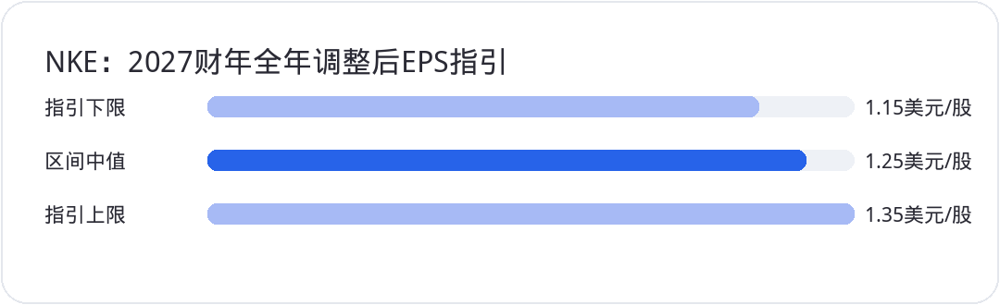

<div style="margin:0;padding:0;background:#f5f7fa;color:#2a2a34;font-size:16px;line-height:1.9;font-family:-apple-system,BlinkMacSystemFont,'SF Pro Text','PingFang SC','Hiragino Sans GB','Microsoft YaHei',Arial,sans-serif;font-variant-numeric:tabular-nums;font-feature-settings:'tnum' 1,'lnum' 1;text-align:left !important;text-align-last:left;letter-spacing:0;word-spacing:normal;white-space:normal;word-break:normal;box-sizing:border-box;"><div style="margin:0;background:#ffffff;padding:28px 22px 44px 22px;box-sizing:border-box;text-align:left !important;text-align-last:left;letter-spacing:0;word-spacing:normal;white-space:normal;word-break:normal;"><p style="display:block;width:100%;margin:0 0 12px 0;padding:0;color:#2763e9;font-size:10px;line-height:1.6;font-weight:650;letter-spacing:0.12em;text-align:center !important;text-align-last:center;word-spacing:normal;white-space:normal;word-break:normal;box-sizing:border-box;">美股 · 期权 · 资讯 · 观点</p><div style="margin:0 0 30px 0;padding:0;text-align:center !important;text-align-last:center;word-spacing:normal;white-space:normal;word-break:normal;box-sizing:border-box;"></div><div style="margin:0 0 0 0;padding:28px 0 0 0;text-align:left !important;text-align-last:left;letter-spacing:0;word-spacing:normal;white-space:normal;word-break:normal;box-sizing:border-box;"><div style="margin:0 0 12px 0;padding:0;text-align:left !important;line-height:1.2;border:0;display:flex;align-items:center;gap:10px;text-align-last:left;letter-spacing:0;word-spacing:normal;white-space:normal;word-break:normal;box-sizing:border-box;"><span style="display:inline-block;flex:0 0 auto;vertical-align:middle;color:#2763e9;font-size:12px;font-weight:850;letter-spacing:0.12em;line-height:1.2;text-transform:uppercase;border:0;box-sizing:border-box;">0 · FOCUS</span><span style="display:block;flex:1 1 auto;min-width:36px;vertical-align:middle;height:1px;margin:0 0 2px 0;background:#2763e9;line-height:1px;font-size:0;border:0;box-sizing:border-box;"></span></div><p style="margin:0 0 16px 0;padding:0;color:#2a2a34;font-size:22px;line-height:1.45;font-weight:850;text-align:left !important;letter-spacing:0;text-align-last:left;word-spacing:normal;white-space:normal;word-break:normal;box-sizing:border-box;">四季度开局，广度开始改善</p><p style="margin:0 0 16px 0;padding:0;color:#454550;font-size:16px;line-height:1.9;font-weight:400;text-align:left !important;letter-spacing:0;word-spacing:normal;white-space:normal;word-break:normal;text-align-last:left;box-sizing:border-box;">10月1日，三大指数小幅收涨，标普500上涨约0.19%，道指和纳指都只上涨约0.04%。标普跑赢纳指，说明当天的改善不只依赖科技权重。不过，一天的相对表现还不足以确认全面轮动，半导体依然是最值得跟踪的强势方向。</p><p style="margin:0 0 16px 0;padding:0;color:#454550;font-size:16px;line-height:1.9;font-weight:400;text-align:left !important;letter-spacing:0;word-spacing:normal;white-space:normal;word-break:normal;text-align-last:left;box-sizing:border-box;">当前有三件事需要分开判断：<strong style="color:#2a2a34;font-weight:700;box-sizing:border-box;">SMH</strong> 已越过关键位置，<strong style="color:#2a2a34;font-weight:700;box-sizing:border-box;">SOXX</strong> 还差一次有效确认；<strong style="color:#2a2a34;font-weight:700;box-sizing:border-box;">NKE</strong> 本季利润表现与全年指引出现分歧；Anthropic 的上市预期，则把高速增长与巨额算力支出摆到一起。第四季度的机会不少，买入条件需要更具体。</p></div><div style="margin:30px 0 0 0;padding:28px 0 0 0;text-align:left !important;text-align-last:left;letter-spacing:0;word-spacing:normal;white-space:normal;word-break:normal;box-sizing:border-box;"><div style="margin:0 0 12px 0;padding:0;text-align:left !important;line-height:1.2;border:0;display:flex;align-items:center;gap:10px;text-align-last:left;letter-spacing:0;word-spacing:normal;white-space:normal;word-break:normal;box-sizing:border-box;"><span style="display:inline-block;flex:0 0 auto;vertical-align:middle;color:#2763e9;font-size:12px;font-weight:850;letter-spacing:0.12em;line-height:1.2;text-transform:uppercase;border:0;box-sizing:border-box;">1 · SEMIS</span><span style="display:block;flex:1 1 auto;min-width:36px;vertical-align:middle;height:1px;margin:0 0 2px 0;background:#2763e9;line-height:1px;font-size:0;border:0;box-sizing:border-box;"></span></div><p style="margin:0 0 16px 0;padding:0;color:#2a2a34;font-size:22px;line-height:1.45;font-weight:850;text-align:left !important;letter-spacing:0;text-align-last:left;word-spacing:normal;white-space:normal;word-break:normal;box-sizing:border-box;">半导体：突破有效，还要经得起回踩</p><p style="margin:0 0 16px 0;padding:0;color:#454550;font-size:16px;line-height:1.9;font-weight:400;text-align:left !important;letter-spacing:0;word-spacing:normal;white-space:normal;word-break:normal;text-align-last:left;box-sizing:border-box;"><strong style="color:#2a2a34;font-weight:700;box-sizing:border-box;">SMH</strong> 收在约617美元，越过613美元附近的压力位。收盘留在关键位置之上，比盘中短暂上穿更有参考价值。接下来要看613美元能否转为支撑：回落时有没有承接，承接之后能否继续守到收盘。</p><p style="margin:0 0 16px 0;padding:0;color:#454550;font-size:16px;line-height:1.9;font-weight:400;text-align:left !important;letter-spacing:0;word-spacing:normal;white-space:normal;word-break:normal;text-align-last:left;box-sizing:border-box;">591—613美元是一段支撑观察区间，上沿检验刚完成的突破，下沿检验更深一层的结构。若价格短暂跌回区间，随后重新站稳613美元，突破仍有继续验证的机会。若591美元也失守，且后续几个交易日收不回来，原有判断就需要下调。这些价位是交易观察线，不是保证生效的保护带。</p><p style="margin:0 0 16px 0;padding:0;color:#454550;font-size:16px;line-height:1.9;font-weight:400;text-align:left !important;letter-spacing:0;word-spacing:normal;white-space:normal;word-break:normal;text-align-last:left;box-sizing:border-box;"><strong style="color:#2a2a34;font-weight:700;box-sizing:border-box;">SOXX</strong> 收在约576.3美元，尚未越过577美元确认线。次日高开不能替代收盘确认，更不能因为盘后成交站上去，就提前把突破记成事实。更稳妥的顺序是收盘越过577美元，再观察回踩是否获得买盘。655美元附近的前高可作为后续历史位置参考，不能直接当成必达目标。</p><p style="margin:0 0 16px 0;padding:0;color:#454550;font-size:16px;line-height:1.9;font-weight:400;text-align:left !important;letter-spacing:0;word-spacing:normal;white-space:normal;word-break:normal;text-align-last:left;box-sizing:border-box;">两个ETF都需要留意价格与RSI动能不同步的风险。背离不意味着必然下跌，也不保证一定按某种路径修复。价格可以继续上涨、横盘，也可以先回撤。它的用途是提高确认要求，而不是用一个指标预告下跌时间。</p><p style="margin:0 0 16px 0;padding:0;color:#454550;font-size:16px;line-height:1.9;font-weight:400;text-align:left !important;letter-spacing:0;word-spacing:normal;white-space:normal;word-break:normal;text-align-last:left;box-sizing:border-box;">这个区别对期权尤其重要。正股方向判断成立，近到期看涨期权仍可能因为上涨太慢、隐含波动率下降或时间损耗而亏损。一个远处的前高，只提供价格参考，没有同时给出上涨速度和期限。</p></div><div style="margin:30px 0 0 0;padding:28px 0 0 0;text-align:left !important;text-align-last:left;letter-spacing:0;word-spacing:normal;white-space:normal;word-break:normal;box-sizing:border-box;"><div style="margin:0 0 12px 0;padding:0;text-align:left !important;line-height:1.2;border:0;display:flex;align-items:center;gap:10px;text-align-last:left;letter-spacing:0;word-spacing:normal;white-space:normal;word-break:normal;box-sizing:border-box;"><span style="display:inline-block;flex:0 0 auto;vertical-align:middle;color:#2763e9;font-size:12px;font-weight:850;letter-spacing:0.12em;line-height:1.2;text-transform:uppercase;border:0;box-sizing:border-box;">2 · EARNINGS</span><span style="display:block;flex:1 1 auto;min-width:36px;vertical-align:middle;height:1px;margin:0 0 2px 0;background:#2763e9;line-height:1px;font-size:0;border:0;box-sizing:border-box;"></span></div><p style="margin:0 0 16px 0;padding:0;color:#2a2a34;font-size:22px;line-height:1.45;font-weight:850;text-align:left !important;letter-spacing:0;text-align-last:left;word-spacing:normal;white-space:normal;word-break:normal;box-sizing:border-box;">耐克：本季利润改善，全年预期却下调</p><p style="margin:0 0 16px 0;padding:0;color:#454550;font-size:16px;line-height:1.9;font-weight:400;text-align:left !important;letter-spacing:0;word-spacing:normal;white-space:normal;word-break:normal;text-align-last:left;box-sizing:border-box;"><strong style="color:#2a2a34;font-weight:700;box-sizing:border-box;">NKE</strong> 的2027财年第一季度收入为112.1亿美元，同比下降4.2%，低于市场预期；GAAP每股收益为0.48美元，高于约0.44美元的预期。本季毛利率为42.8%，上年同期为42.2%。收入承压与利润率改善同时存在，不能把整份财报简化成每一项都恶化。</p><p style="margin:0 0 16px 0;padding:0;color:#454550;font-size:16px;line-height:1.9;font-weight:400;text-align:left !important;letter-spacing:0;word-spacing:normal;white-space:normal;word-break:normal;text-align-last:left;box-sizing:border-box;">更大的压力来自下一阶段。公司给出的2027财年全年调整后摊薄每股收益指引为1.15—1.35美元，区间中值为1.25美元；全年收入预计下降高个位数。市场需要根据更低的未来盈利基础重新判断估值。季度GAAP收益与全年调整后收益覆盖的期间和口径不同，不能直接相减，也不能把1.25美元写成本季业绩。</p><p style="margin:4px 0 16px 0;padding:0;text-align:center !important;text-align-last:center;word-spacing:normal;white-space:normal;word-break:normal;box-sizing:border-box;"></p><p style="margin:0 0 16px 0;padding:0;color:#454550;font-size:16px;line-height:1.9;font-weight:400;text-align:left !important;letter-spacing:0;word-spacing:normal;white-space:normal;word-break:normal;text-align-last:left;box-sizing:border-box;">季度库存约78亿美元。库存规模只是现金占用的一部分，不能仅凭低于预期就认定现金流已经改善。后续还要核对促销、渠道销售质量、经营现金流和一次性调整，才能判断毛利率修复是否能持续。Converse 的疲弱也说明，集团内部不同业务的修复并不同步。</p><p style="margin:0 0 16px 0;padding:0;color:#454550;font-size:16px;line-height:1.9;font-weight:400;text-align:left !important;letter-spacing:0;word-spacing:normal;white-space:normal;word-break:normal;text-align-last:left;box-sizing:border-box;">盘后股价出现明显下跌，与全年指引压力相符，但跌幅会随交易时点变化，不能拿盘后某一笔价格当作次日收盘。31.2—34.9美元附近的长期历史区间，只能辅助观察；久远的成交位置不等于今天仍有同样的买盘。真正有用的证据，是新的盘整、持续承接以及盈利预期停止下修。</p></div><div style="margin:30px 0 0 0;padding:28px 0 0 0;text-align:left !important;text-align-last:left;letter-spacing:0;word-spacing:normal;white-space:normal;word-break:normal;box-sizing:border-box;"><div style="margin:0 0 12px 0;padding:0;text-align:left !important;line-height:1.2;border:0;display:flex;align-items:center;gap:10px;text-align-last:left;letter-spacing:0;word-spacing:normal;white-space:normal;word-break:normal;box-sizing:border-box;"><span style="display:inline-block;flex:0 0 auto;vertical-align:middle;color:#2763e9;font-size:12px;font-weight:850;letter-spacing:0.12em;line-height:1.2;text-transform:uppercase;border:0;box-sizing:border-box;">3 · FOCUS</span><span style="display:block;flex:1 1 auto;min-width:36px;vertical-align:middle;height:1px;margin:0 0 2px 0;background:#2763e9;line-height:1px;font-size:0;border:0;box-sizing:border-box;"></span></div><p style="margin:0 0 16px 0;padding:0;color:#2a2a34;font-size:22px;line-height:1.45;font-weight:850;text-align:left !important;letter-spacing:0;text-align-last:left;word-spacing:normal;white-space:normal;word-break:normal;box-sizing:border-box;">Anthropic：收入增长与融资需求要一起看</p><p style="margin:0 0 16px 0;padding:0;color:#454550;font-size:16px;line-height:1.9;font-weight:400;text-align:left !important;letter-spacing:0;word-spacing:normal;white-space:normal;word-break:normal;text-align-last:left;box-sizing:border-box;">有关 Anthropic 最早在11月启动上市推介、感恩节前开始交易的安排，目前仍来自报道，时间表和最终定价都可能改变。讨论中的高估值，也不是已经完成的融资价格。上市日期没有最终确认时，先把它当成潜在事件，而不是确定的资金流入。</p><p style="margin:0 0 16px 0;padding:0;color:#454550;font-size:16px;line-height:1.9;font-weight:400;text-align:left !important;letter-spacing:0;word-spacing:normal;white-space:normal;word-break:normal;text-align-last:left;box-sizing:border-box;">相关报道给出的2025年收入约46亿美元，经营亏损超过80亿美元，净亏损接近420亿美元。其中超过340亿美元与负债公允价值变动有关，不能把净亏损全部视为当年日常经营烧掉的现金。但剔除这类会计影响，也不等于经营已经自我供血，经营亏损仍需要单独分析。</p><p style="margin:0 0 16px 0;padding:0;color:#454550;font-size:16px;line-height:1.9;font-weight:400;text-align:left !important;letter-spacing:0;word-spacing:normal;white-space:normal;word-break:normal;text-align-last:left;box-sizing:border-box;">约5180亿美元的未来算力与基础设施承诺，更需要看清方向。这是跨未来期间的支出安排，不是公司已经收到的订单，也不是全部需要在一个季度支付的资本开支。若收入兑现较慢，而采购和付款承诺难以缩减，融资需求就会扩大；若收入与毛利增长足以覆盖持续投入，现金约束才会减轻。</p><p style="margin:0 0 16px 0;padding:0;color:#454550;font-size:16px;line-height:1.9;font-weight:400;text-align:left !important;letter-spacing:0;word-spacing:normal;white-space:normal;word-break:normal;text-align-last:left;box-sizing:border-box;">年化收入也不能直接替代全年已实现收入。把某个月的业务速度放大到十二个月，适合观察增长趋势，却无法证明全年现金到账，更无法确认未来数年的盈利。高估值要依赖客户留存、推理成本、毛利和现金转换共同支持，不能只靠一条收入增长曲线。</p><p style="margin:0 0 16px 0;padding:0;color:#454550;font-size:16px;line-height:1.9;font-weight:400;text-align:left !important;letter-spacing:0;word-spacing:normal;white-space:normal;word-break:normal;text-align-last:left;box-sizing:border-box;">这件事对上市的云服务和芯片伙伴同样有影响，但传导需要经过合同期限、交付、付款和利润确认。融资消息可以改善预期，供应商是否获得可持续收益还要逐项核对。采购承诺和最终利润之间，仍有信用与执行风险。</p></div><div style="margin:30px 0 0 0;padding:28px 0 0 0;text-align:left !important;text-align-last:left;letter-spacing:0;word-spacing:normal;white-space:normal;word-break:normal;box-sizing:border-box;"><div style="margin:0 0 12px 0;padding:0;text-align:left !important;line-height:1.2;border:0;display:flex;align-items:center;gap:10px;text-align-last:left;letter-spacing:0;word-spacing:normal;white-space:normal;word-break:normal;box-sizing:border-box;"><span style="display:inline-block;flex:0 0 auto;vertical-align:middle;color:#2763e9;font-size:12px;font-weight:850;letter-spacing:0.12em;line-height:1.2;text-transform:uppercase;border:0;box-sizing:border-box;">4 · MACRO</span><span style="display:block;flex:1 1 auto;min-width:36px;vertical-align:middle;height:1px;margin:0 0 2px 0;background:#2763e9;line-height:1px;font-size:0;border:0;box-sizing:border-box;"></span></div><p style="margin:0 0 16px 0;padding:0;color:#2a2a34;font-size:22px;line-height:1.45;font-weight:850;text-align:left !important;letter-spacing:0;text-align-last:left;word-spacing:normal;white-space:normal;word-break:normal;box-sizing:border-box;">利率回落提供缓冲，油价仍是变量</p><p style="margin:0 0 16px 0;padding:0;color:#454550;font-size:16px;line-height:1.9;font-weight:400;text-align:left !important;letter-spacing:0;word-spacing:normal;white-space:normal;word-break:normal;text-align-last:left;box-sizing:border-box;">美国国债收益率在10月1日回落，十年期纽约尾盘约为5.24%。这为高估值资产提供了一些缓冲，但利率仍处高位，不能把一天回落理解为融资压力已经消失。油价因中东风险再度走强，又可能推高通胀与企业成本，两股力量会继续拉扯风险偏好。</p><p style="margin:0 0 16px 0;padding:0;color:#454550;font-size:16px;line-height:1.9;font-weight:400;text-align:left !important;letter-spacing:0;word-spacing:normal;white-space:normal;word-break:normal;text-align-last:left;box-sizing:border-box;">下一项观察重点是10月2日的就业报告。新增就业、失业率、工资与历史修正需要一起看。强就业可能支持需求，也可能延后政策转松；弱就业可能缓解利率压力，却会增加盈利担忧。不能只凭一个头条数字，提前决定所有资产的方向。</p></div><div style="margin:30px 0 0 0;padding:28px 0 0 0;text-align:left !important;text-align-last:left;letter-spacing:0;word-spacing:normal;white-space:normal;word-break:normal;box-sizing:border-box;"><div style="margin:0 0 12px 0;padding:0;text-align:left !important;line-height:1.2;border:0;display:flex;align-items:center;gap:10px;text-align-last:left;letter-spacing:0;word-spacing:normal;white-space:normal;word-break:normal;box-sizing:border-box;"><span style="display:inline-block;flex:0 0 auto;vertical-align:middle;color:#2763e9;font-size:12px;font-weight:850;letter-spacing:0.12em;line-height:1.2;text-transform:uppercase;border:0;box-sizing:border-box;">5 · SETUP</span><span style="display:block;flex:1 1 auto;min-width:36px;vertical-align:middle;height:1px;margin:0 0 2px 0;background:#2763e9;line-height:1px;font-size:0;border:0;box-sizing:border-box;"></span></div><p style="margin:0 0 16px 0;padding:0;color:#2a2a34;font-size:22px;line-height:1.45;font-weight:850;text-align:left !important;letter-spacing:0;text-align-last:left;word-spacing:normal;white-space:normal;word-break:normal;box-sizing:border-box;">接下来三至五个交易日，按条件行动</p><p style="margin:0 0 16px 0;padding:0;color:#454550;font-size:16px;line-height:1.9;font-weight:400;text-align:left !important;letter-spacing:0;word-spacing:normal;white-space:normal;word-break:normal;text-align-last:left;box-sizing:border-box;">偏多场景是 <strong style="color:#2a2a34;font-weight:700;box-sizing:border-box;">SMH</strong> 回踩613美元附近仍能收回，<strong style="color:#2a2a34;font-weight:700;box-sizing:border-box;">SOXX</strong> 收盘越过577美元并守住，板块内部上涨进一步扩散。突破获得确认，风险偏好改善才更有根据。若价格很快跌回关键位置，且后续收盘没有修复，偏多判断需要撤回。</p><p style="margin:0 0 16px 0;padding:0;color:#454550;font-size:16px;line-height:1.9;font-weight:400;text-align:left !important;letter-spacing:0;word-spacing:normal;white-space:normal;word-break:normal;text-align-last:left;box-sizing:border-box;">中性场景是两个ETF围绕关键位置反复，利率与油价也没有给出一致方向。此时等待回踩与就业数据被消化，比因为季节性统计而加快追涨更合理。连续站稳或明显跌破支撑，都会结束这个区间判断。</p><p style="margin:0 0 16px 0;padding:0;color:#454550;font-size:16px;line-height:1.9;font-weight:400;text-align:left !important;letter-spacing:0;word-spacing:normal;white-space:normal;word-break:normal;text-align-last:left;box-sizing:border-box;">偏空场景是 <strong style="color:#2a2a34;font-weight:700;box-sizing:border-box;">SMH</strong> 跌破591美元后难以收复，<strong style="color:#2a2a34;font-weight:700;box-sizing:border-box;">SOXX</strong> 持续受阻于577美元，同时利率或盈利预期增加估值压力。技术突破失败与基本面重估可能相互强化。若关键位置重新收复、买盘延续到收盘，这个场景也要撤回。先写清失效条件，才能在行情改变时调整仓位。</p></div><div style="margin:34px 0 0 0;padding:0;border:1px solid #e4e7ed;border-radius:24px;background:#fafbfc;text-align:center !important;box-sizing:border-box;overflow:hidden;text-align-last:center;word-spacing:normal;white-space:normal;word-break:normal;"><p style="margin:0;padding:18px 16px;color:#6a6a78;font-size:14px;line-height:1.8;text-align:center !important;background:#fafbfc;box-sizing:border-box;text-align-last:center;word-spacing:normal;white-space:normal;word-break:normal;">长按识别二维码关注公众号，持续获取每日美股资讯与观点。</p><p style="margin:0;text-align:center !important;background:#ffffff;box-sizing:border-box;text-align-last:center;word-spacing:normal;white-space:normal;word-break:normal;"></p></div><p style="margin:28px 0 0 0;padding:22px 0 0 0;color:#9a9aa8;font-size:12px;line-height:1.8;text-align:center !important;text-align-last:center;word-spacing:normal;white-space:normal;word-break:normal;box-sizing:border-box;">免责声明：本文仅为个人市场观察和交易复盘，不构成任何投资建议；市场有风险，交易需谨慎。</p></div></div>
